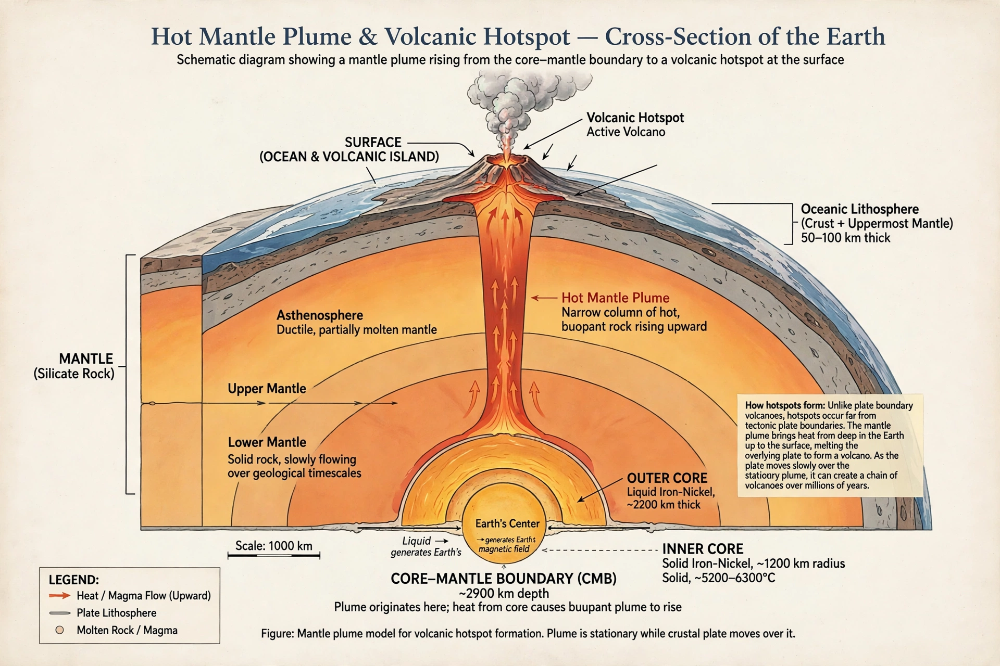

| Mantle plume | |
| Proposed by | W. Jason Morgan (1971) |
|---|---|
| Nature | Hypothesised upwelling of hot rock from deep in the Earth's mantle |
| Associated features | Hotspots, large igneous provinces, volcanic island chains |
A mantle plume is a proposed mechanism of convection within the Earth's mantle: a narrow, mushroom-shaped upwelling of abnormally hot rock that rises from deep in the mantle — in the classical model, from the core–mantle boundary — and melts as it nears the surface, producing volcanism away from plate boundaries. The concept was proposed by the geophysicist W. Jason Morgan in 1971 to explain volcanic hotspots such as Hawaii and Iceland, whose chains of volcanoes record the motion of tectonic plates over long-lived, relatively fixed melting anomalies.

In Morgan's model, a plume consists of a broad head (hundreds of kilometres across) followed by a narrow tail. When a new plume head arrives beneath the lithosphere it is held to cause rapid melting on a vast scale, producing a large igneous province such as the Deccan Traps or Siberian Traps flood basalts — events associated with some mass extinctions — while the plume tail then feeds a persistent hotspot, generating an age-progressive chain of volcanoes like the Hawaiian–Emperor seamount chain as the plate moves overhead. Supporting evidence cited for plumes includes elevated helium-3/helium-4 ratios in hotspot lavas, suggesting a deep, primitive source, and seismic tomography images interpreted as low-velocity conduits extending into the lower mantle beneath some hotspots.
The plume hypothesis has been debated since its proposal. Critics argue that some hotspot volcanism can be explained by shallow processes — lithospheric extension, small-scale convection, or compositional heterogeneity in the upper mantle ("wetspots") — and that the tomographic evidence for deep conduits is ambiguous for many supposed plumes. Most geoscientists accept that at least the strongest hotspots, such as Hawaii, Iceland and Yellowstone, are fed from depth, while the status of weaker hotspots remains contested; the depth from which plumes originate, and whether they start at the core–mantle boundary or at the 660 km discontinuity, are active research questions.
Hotspot · Large igneous province · Mantle convection · Hawaiian–Emperor seamount chain